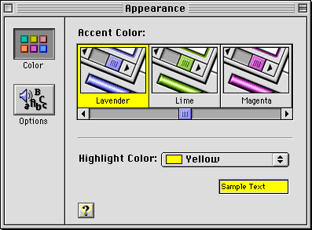

Platinum Appearance
The suite of appearance features (collectively known as a theme) which debuts in Mac OS 8 is called platinum appearance. This is the default appearance of the Mac OS 8 interface, so this document uses platinum appearance as the basis for all figures. As noted above, however, you should not assume that any controls you provide will look exactly as depicted in the figures.The Appearance control panel provides a range of accent and highlight color choices to the user (see Figure 1-4).
Figure 1-4 Color control in the Appearance control panel

The main thing to remember when you design dialog boxes and windows is that appearance may change, but layout does not. The section "Layout Guidelines" (page 63) will help you ensure that your dialog boxes will display correctly under all appearance settings.
- Note
- The default system font is Charcoal, but all illustrations in this document use Chicago font for standard text. Chicago provides the best basis for text layout; in fact, it is the metric standard upon which Charcoal is based. It is very important for you to design your dialog boxes and control panels with Chicago text, so they will look good in any System font the user selects.